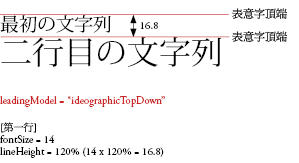
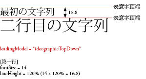

| 套件 | flashx.textLayout.formats |
| 類別 | public final class LeadingModel |
| 繼承 | LeadingModel |
| 語言版本: | ActionScript 3.0 |
| 執行階段版本: | Flash Player 10, AIR 1.5 |
TextLayoutFormat 類別之 leadingModel 屬性的值，由行距基礎及行距方向的有效組合所組成。行距基礎描述段落中決定字行之行距 (或 lineHeight) 的基線。行矩方向指定 lineHeight 屬性代表字行基線與之前字行的距離，或是字行基線與之後字行的距離。

 


相關 API 元素
TextLayoutFormat.lineHeight
flash.text.TextField
flash.text.engine.TextLine
 隱藏繼承公用屬性
隱藏繼承公用屬性 顯示繼承公用屬性
顯示繼承公用屬性
| 常數 | 定義自 | ||
|---|---|---|---|
| APPROXIMATE_TEXT_FIELD : String = "approximateTextField" [靜態] 指定近似 TextField 行距行為的行距模型。 | LeadingModel | ||
| ASCENT_DESCENT_UP : String = "ascentDescentUp" [靜態] 指定行距基礎為 ASCENT/DESCENT 且行距方向為 UP。 | LeadingModel | ||
| AUTO : String = "auto" [靜態] 指定根據段落的地區屬性自動選擇行距模型。 | LeadingModel | ||
| BOX : String = "box" [靜態] 指定以 CSS 內嵌格式模型 (需要不斷堆疊線段方框) 為基礎的行距模型。 | LeadingModel | ||
| IDEOGRAPHIC_CENTER_DOWN : String = "ideographicCenterDown" [靜態] 指定行距基礎為 IDEOGRAPHIC_CENTER 且行距方向為向下。 | LeadingModel | ||
| IDEOGRAPHIC_CENTER_UP : String = "ideographicCenterUp" [靜態] 指定行距基礎為 IDEOGRAPHIC_CENTER 且行距方向為 UP。 | LeadingModel | ||
| IDEOGRAPHIC_TOP_DOWN : String = "ideographicTopDown" [靜態] 指定行距基礎為 IDEOGRAPHIC_TOP 且行距方向為 DOWN。 | LeadingModel | ||
| IDEOGRAPHIC_TOP_UP : String = "ideographicTopUp" [靜態] 指定行距基礎為 IDEOGRAPHIC_TOP 且行距方向為 UP。 | LeadingModel | ||
| ROMAN_UP : String = "romanUp" [靜態] 指定行距基礎為 ROMAN 且行距方向為 UP。 | LeadingModel | ||
APPROXIMATE_TEXT_FIELD | 常數 |
public static const APPROXIMATE_TEXT_FIELD:String = "approximateTextField"| 語言版本: | ActionScript 3.0 |
| 執行階段版本: | Flash Player 10, AIR 1.5 |
指定近似 TextField 行距行為的行距模型。它類似於 ASCENT_DESCENT_UP，其中 lineHeight 代表從上一行下緣基線到這一行上緣基線的距離。不過，基線位置近似 TextField 所決定的位置，而非使用 TextLine 所提供的度量。
ASCENT_DESCENT_UP | 常數 |
public static const ASCENT_DESCENT_UP:String = "ascentDescentUp"| 語言版本: | ActionScript 3.0 |
| 執行階段版本: | Flash Player 10, AIR 1.5 |
指定行距基礎為 ASCENT/DESCENT 且行距方向為 UP。換言之，lineHeight 是指從上一行下緣基線到這一行上緣基線的距離。
AUTO | 常數 |
public static const AUTO:String = "auto"| 語言版本: | ActionScript #IDEOGRAPHIC_TOP_DOWN |
| 執行階段版本: | Flash Player 10, AIR 1.5 |
指定根據段落的 locale 屬性自動選擇行距模型。對於日文和中文，它會是 IDEOGRAPHIC_TOP_DOWN，而對於所有其他語言，則是 ROMAN_UP。
BOX | 常數 |
public static const BOX:String = "box"| 語言版本: | ActionScript 3.0 |
| 執行階段版本: | Flash Player 10, AIR 1.5 |
指定以 CSS 內嵌格式模型 (需要不斷堆疊線段方框) 為基礎的行距模型。在使用 baselineShift、dominantBaseline 和 alignmentBaseline 等對齊文字行上的所有分葉元素之後，線段方框會定義為內嵌方框周圍的邊界方框。對於範圍，內嵌方框是透過在文字內容上下平均套用行距，使其高度等於以 lineHeight 方式取得的值。對於內嵌圖形，則會忽略 lineHeight；內嵌方框是衍生自其指定的尺寸和邊框距離值。此外，會一起忽略 firstBaselineOffset 會與此行距模型。
如需詳細資訊，請參閱方框行距模型。
IDEOGRAPHIC_CENTER_DOWN | 常數 |
public static const IDEOGRAPHIC_CENTER_DOWN:String = "ideographicCenterDown"| 語言版本: | ActionScript 3.0 |
| 執行階段版本: | Flash Player 10, AIR 1.5 |
指定行距基礎為 IDEOGRAPHIC_CENTER 且行距方向為向下。換言之，lineHeight 是指從下一行表意字中央基線到這一行表意字中央基線的距離。
IDEOGRAPHIC_CENTER_UP | 常數 |
public static const IDEOGRAPHIC_CENTER_UP:String = "ideographicCenterUp"| 語言版本: | ActionScript 3.0 |
| 執行階段版本: | Flash Player 10, AIR 1.5 |
指定行距基礎為 IDEOGRAPHIC_CENTER 且行距方向為 UP。換言之，lineHeight 是指從上一行表意字中央基線到這一行表意字中央基線的距離。
IDEOGRAPHIC_TOP_DOWN | 常數 |
public static const IDEOGRAPHIC_TOP_DOWN:String = "ideographicTopDown"| 語言版本: | ActionScript 3.0 |
| 執行階段版本: | Flash Player 10, AIR 1.5 |
指定行距基礎為 IDEOGRAPHIC_TOP 且行距方向為 DOWN。換言之，lineHeight 是指從下一行表意字上方基線到這一行表意字上方基線的距離。
IDEOGRAPHIC_TOP_UP | 常數 |
public static const IDEOGRAPHIC_TOP_UP:String = "ideographicTopUp"| 語言版本: | ActionScript 3.0 |
| 執行階段版本: | Flash Player 10, AIR 1.5 |
指定行距基礎為 IDEOGRAPHIC_TOP 且行距方向為 UP。換言之，lineHeight 是指從上一行表意字上方基線到這一行表意字上方基線的距離。
ROMAN_UP | 常數 |
public static const ROMAN_UP:String = "romanUp"| 語言版本: | ActionScript 3.0 |
| 執行階段版本: | Flash Player 10, AIR 1.5 |
指定行距基礎為 ROMAN 且行距方向為 UP。換言之，lineHeight 是指從上一行羅馬基線到這一行羅馬基線的距離。
Tue Jun 12 2018, 03:47 PM Z